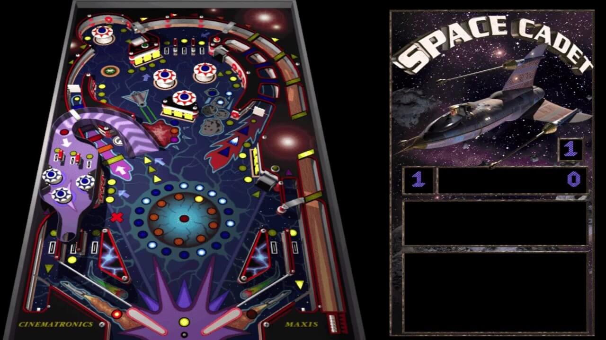
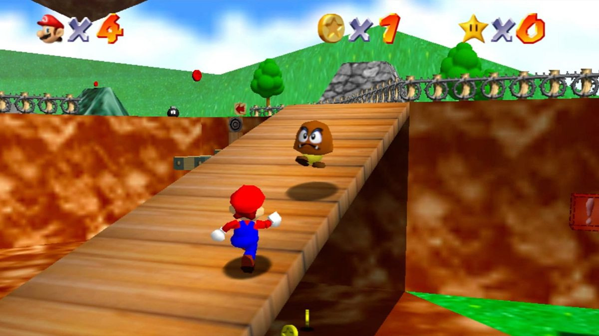
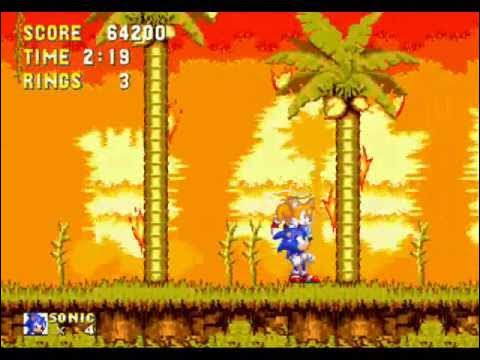
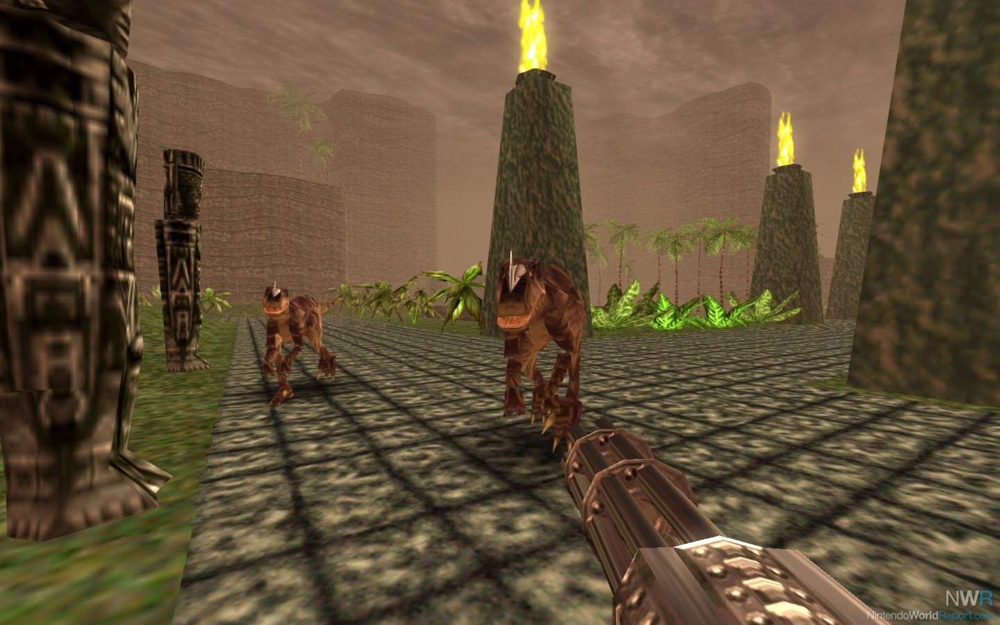
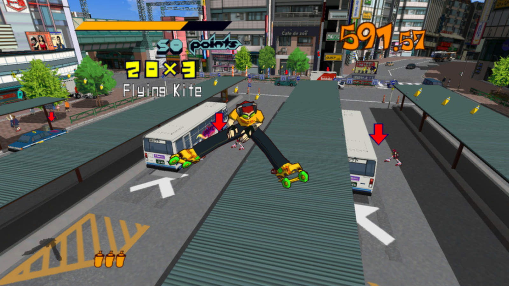

Back when games were good!

Super Mario 64 © Nintendo 1996
Super Mario 64
Super Mario 64 is a groundbreaking video game that revolutionized 3D platformers when it was released for the Nintendo 64. Players control Mario as he explores the vast, open world of Princess Peach’s castle, jumping between different vibrant levels to collect Power Stars. What I love about *Super Mario 64* is the freedom it offers, with each level filled with creative challenges and secrets to discover. The game's controls, although a bit dated by today's standards, were incredibly innovative at the time, and the charming, colorful design still holds up. The sense of adventure and joy from jumping around, solving puzzles, and defeating bosses makes it an unforgettable classic.
Fun link
Using a computer to beat Super Mario 64 as fast as possible

Sonic the Hedgehog 3 © Sega 1994
Sonic the Hedgehog 3
Sonic the Hedgehog 3, released in 1994 for the Sega Genesis, is often considered the best game in the *Sonic* franchise for its perfect blend of fast-paced gameplay, level design, and memorable music. The game introduces new power-ups, two-player co-op gameplay, and a wide range of unique levels that push the series' iconic speed and platforming to new heights. What makes it stand out is its seamless integration of story, mechanics, and variety, creating an experience that’s both challenging and fun. The addition of Knuckles as a playable character and the fantastic music by Michael Jackson and the team adds even more depth and style. Sonic 3 balances everything that fans love about Sonic while refining the formula, making it the pinnacle of the series.
Fun link
Michael Jackson's involvement with the Sonic the Hedgehog 3 OST

Turok: Dinosaur Hunter © Iguana Entertainment 1994
Turok: Dinosaur Hunter
Turok: Dinosaur Hunter, released in 1997 for the Nintendo 64 and PC, is a groundbreaking first-person shooter that combines action with prehistoric creatures and lush, vibrant environments. Players take on the role of Turok, a native warrior on a mission to stop an evil alien force while battling deadly dinosaurs. What I love about Turok is its unique blend of weapons, thrilling dino encounters, and exploration, creating an unforgettable experience that set it apart from other shooters of the time. The atmosphere, immersive world-building, and intense combat make it an exciting, nostalgic classic that’s still remembered fondly by fans of the genre. The game’s mix of fantasy, sci-fi, and prehistoric adventure was truly ahead of its time.
Fun link
What do critics think about this game?

Jet Set Radio © Sega 2000
Jet Grind Radio
Jet Grind Radio, released in 2000 for the Sega Dreamcast, is a vibrant and unique game that blends graffiti, urban skating, and a killer soundtrack into an unforgettable experience. Players control a group of rebellious skaters as they spray paint graffiti across a futuristic Tokyo while evading the police and rival gangs. What I love about Jet Grind Radio is its distinctive cel-shaded art style, which still looks fresh and stylish today, and its incredible soundtrack that perfectly captures the game’s edgy, energetic vibe. The gameplay is a fun mix of skating, platforming, and strategy, while the open-world design encourages exploration and creativity. It’s a game that’s both bold and artistic, offering a true sense of freedom and rebellion.
Fun link
Watch the unique gameplay